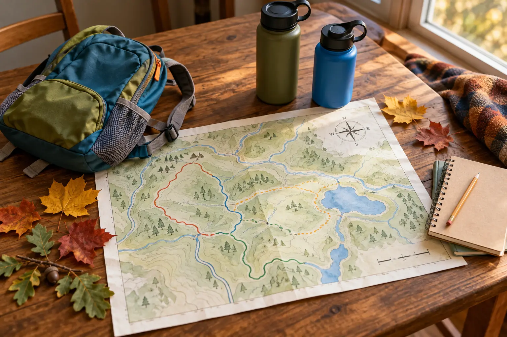

Short proof loop
Use when: this is a first visit, the building is closed, weather is uncertain or a child has limited trail patience.
Plan: choose the flattest mapped option near the center and turn around at the first agreed landmark.
MARCELLUS · ONE LOOP FIRST
Six miles of trails does not mean your family needs a six-mile day. Start at the kiosk, sign in, prove one short loop and add distance only while the kids are still noticing the woods.

Baltimore Woods Nature Center is at 4007 Bishop Hill Road in Marcellus. Its official visit information lists more than six miles of trails across a 270-acre preserve, with trails open every day from dawn to dusk. Admission and parking are currently free, donations are appreciated, and parking is available in upper and lower lots. The official rule is also clear: leave pets at home. Verify all of that on the Interpretive Center and Trails page before leaving because operations and trail conditions can change.
The Interpretive Center is currently listed as open Monday through Friday from 9 a.m. to 4 p.m. and Saturday from 10 a.m. to 4 p.m. The trails stay open when the building is closed, but staff help, the gift shop, art exhibits and indoor restrooms depend on building access. If a predictable restroom decides whether the outing works, go during confirmed center hours and call 315-673-1350 when the official page leaves a question.
From central Syracuse, allow roughly 25 to 35 minutes before current traffic and your exact starting point. Save the official PDF map before the drive. Baltimore Woods also offers a georeferenced map for Avenza, but a phone app is a supplement—not permission to ignore trail signs, closures or battery limits.
Download the official trail map. Pick a primary loop and a shorter fallback. Check the National Weather Service forecast for Marcellus and use the family weather-cutoff plan to decide go, shorten or skip. Thunder, high wind, poor road conditions, dangerous heat or a closing daylight window should end the debate before the car moves.
Have everybody use a bathroom before departure. If the center will be closed, do not promise an indoor restroom. Bring water and one snack that can wait until the family is back near the building or car.
Use the parking-lot regroup: an adult controls the unload while children wait together away from moving vehicles. At the outdoor kiosk, sign in as requested, take or photograph the current map and look for posted closures. Point to the route, the planned turnaround and the return direction so school-age kids know what the family is actually doing.
Do not bring bicycles, horses, sleds or dogs onto the preserve; the current official map marks those activities as prohibited. Stay on marked trails to protect both visitors and rare plants close to the path.
Give children three low-pressure jobs: find one sign of an animal without approaching it, identify one sound that is not a voice, and choose one tree or trail feature for the turnaround photo. The point is attention, not species certainty. Use the family wildlife-distance plan: stop, group up, give the animal space, secure food and leave when the encounter cannot remain calm.
Keep adults at the front and back when the trail narrows. At every junction, stop until the whole group identifies the next blaze or map line. If the route feels different from the map, return by the last known segment rather than letting a child vote on a guess.
Return toward the center or another clearly permitted area before eating. Count children, check water, inspect shoes and let the family decide whether the visit is complete. A ten-minute snack beside a known exit is better than carrying food deeper into the woods to manufacture a second act.
Brush visible mud and seeds from footwear, pack every wrapper and run the post-trail tick routine at home. The official trail page advises locking the vehicle and securing valuables; do not leave bags or electronics visible while hiking.
Baltimore Woods says visitors can choose among flat trails that are wheelchair-accessible and more challenging routes with hills. That broad statement is not a guarantee that every surface, grade, bridge or seasonal condition works for a particular mobility device or stroller. Review the current map, call the center when the exact route matters, and inspect the first section before committing.
A sturdy stroller may help on an appropriate confirmed route, but it can also become a heavy object to lift on roots, mud or narrow sections. If a device user needs a continuous firm surface, known grade and accessible restroom, confirm each one directly instead of translating “flat” into “fully accessible.”
Light rain: use the shortest confirmed route and skip stream-edge curiosity. Mud: turn around rather than widening the trail. Center closed: use the kiosk and saved map, but leave if the restroom situation does not work. Child done: assign the return-photo job and head back. Trail closure: choose the mapped fallback or leave; do not step around a barrier.
For a more structured nature-center day with different facilities, use the Beaver Lake family plan. For a short hike where rock edges change the risk, use the Clark Reservation rim-first guide.
Skip the trail visit when a required restroom is unavailable, a child needs a conventional playground rather than a nature walk, a mobility route cannot be confirmed, the family cannot leave a pet at home, or weather and daylight remove the margin. Families seeking a staffed program should register for a current official event instead of assuming an educator will be available during an ordinary visit.
MAKE THE DAY COUNT
Build the plan your family can finish well, then leave enough energy for the ride home.
More family plans